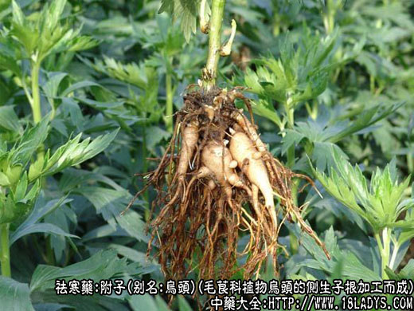
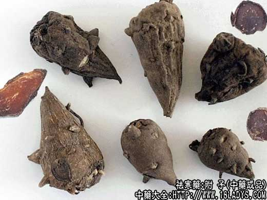
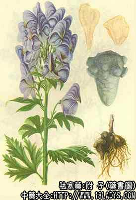

附子为常用中药，《神农本草经》列为下品。
别名：天雄、乌头。
来源：为毛茛科植物乌头的侧生子根加工而成。母根四川省称为川乌。均为栽培。
产地：主产于四川省的江油县、安县。陕西、云南、湖南，也有生产。
采收加工：6月下旬（夏至）至7月初（小暑）挖出乌头根部洗净泥土，选取侧生块根称为泥附，再按不同的规格进行加工。
1、盐附子。选打个泥附洗净，放入氯化镁（卤水）及食盐混合溶液中，浸泡数日捞出晾晒至半干，再浸入氯化镁溶液中随时添加食盐，使之保持过饱和状态，如此反复多次直至附子内外均有食盐结晶附着时晒干。
2、附子瓣。将中小个泥附洗净后，刮去外皮纵切两瓣，放入氯化镁的溶液中，浸泡数日，加热煮沸2～3分钟，取出后以清水漂洗干净，以黄糖及菜油制成调色剂，使之染成浓茶色，再以清水漂洗至不麻舌时取出蒸熟、烘半干后再晒干。
3、黑附片。将小个泥附洗净，不刮外皮，放入氯化镁溶液中浸泡数日，加热煮沸2～3分钟，取出以清水漂洗干净，切成5毫米的纵片，加黄糖及菜油制成调色剂亦染成茶色，再以清水漂洗至不麻舌时，取出蒸熟，烘干或晒干。
4、白附片。加工方法略同黑附片。但需刮去外皮不加染色。加热煮至透明，晒半干用硫磺熏成白色，晒干。
性状鉴别：盐附子又名天雄。呈圆锥形。长约4～8厘米，直径3～5厘米，表皮褐色或黑褐色，周身附有盐的结晶，上部有数枚乳头状疣突，中部有隆起的支根，顶端有略凹的芽痕。因久受盐渍而质重不干，易切裂，横切面显糊化淀粉状，黄褐色，中心色稍淡呈星状纹理。空隙处亦附有盐的结晶，味咸稍苦辛。
以肥大，坚实，灰黑色者为佳。
炮制：生用，或照附子瓣，片方法再制。
附子瓣：体形略小于盐附子。纵切面边沿突起中心凹陷。内外均淡棕黄色或棕黄色，有光泽，质坚硬角质状，不易碎断。对光照视呈半透明体。显纵形筋脉线（木质部）外表面亦带有疣突及支根和芽痕凹。味淡平。
以色黄光亮，无霉霜，块均匀者为佳。
炮制：与黑豆同煮至透，无麻辣味后切片。
黑附片：呈不规则的片状，厚约3～4毫米。外皮黑褐色。内色棕黄。质坚硬角质状有光泽。
以片大均匀，色棕黄，坚硬，无白心者为佳。
白附片：其形状气味与黑附片相同。全体呈淡黄白色。
以片大，色白，透明，厚薄均匀者为佳。
主要成分：含生物硷，为乌头硷、新乌头硷及次乌头硷等。此外，还含有非生物硷成分。
药理作用：本品历来认为具有回阳救逆、散寒止痛的作用。现已证实，其药理作用为；
1、强心。能增强心力收缩。在厥逆（休克、心功能不全）时，通过附子的强心作用，改善全身循环功能，从而救治心血管功能不全。有效成分为非生物碱部分，前煮后一般不破坏，仍保留强心作用。
2、镇痛。实验证明，乌头硷的分解产物有一定镇痛作用。
3、抗炎。对实验性关节炎（甲醛性和蛋清性）有明显的消炎作用。
4、兴奋垂体—肾上腺皮质系统。熟附片的煎剂能显著降低大鼠肾上腺内抗坏血酸的含量，增加尿中17-酮类固醇的排泄，减少末稍血液中嗜酸性白细胞数。此外，对某些肾上腺皮质功能不全的患者，附子具有肾上腺皮质激素样的作用。
炮制：黑白附片多用产地已制的成品。
性味：辛、大热、有毒。
归经：入十二经。
功能：回阳补火，逐火寒湿。
主治：用于阴寒内盛，大吐、大泻、大汗，身凉肢冷，阳衰欲脱，脉微欲绝。肾阳衰弱的腰膝冷痛，脾阳衰弱的泄泻久泻，形寒畏冷，风寒湿痹。
临床应用：附子只适宜于阴虚阴盛、全身功能衰退之症。使用附子的参考指征是：1、脉沉迟无力或细弱；2、畏寒、四肢不温、腰膝酸冷；3、小便清长，大便稀烂，次数增多属于阳虚泄泻者；4、面色苍白、唇淡、多诞、舌白腻而质胖。此外，还可参考下列条件：下肢浮肿、嗜睡、自汗。根据以上基本症状，再结合其它证候，适当配伍。
1、治阴症水肿（阴水）。凡水肿而伴有全身功能衰退或衰竭的症状者，属于阴水，常见于慢性肾炎和心力衰竭所致的水肿。此时患者有显著的脾肾阳虚症状，单用一般利水剂己不能解决问题，必须加用附子、干姜等药以温肾祛寒，温脾利水，活跃全身功能（主要是血液循环功能）。一般可在五苓散基础上加干姜、附子，或用温阳利水汤。如需加强健脾行气作用，则用干姜、附子配白术、甘草、厚朴、木香等，方如实脾饮（此方为治阴水的代表方剂）。此方对寒湿型的肝硬化腹水也适用，用附子温肾后，不但能够利水，而且能显著增进食欲。
2、治亡阳厥逆，即休克虚脱，表现为肌肤冰冷、呼吸气微、四肢厥逆（厥逆是冷而不温的意思）、脉微细活沉伏，同由于循环衰竭所致，须用附子、干姜、人参等温阳救逆（强心而抗休克），程度较轻者用附子汤，重者用四你逆，更重者用参附汤，如冷汗淋漓较严重则再加龙骨、牡蛎、五味子。
3、治阳虚休衰，尤其肾阳虚弱（所谓命门火不足），下半身常觉冷，腰膝酸软冷痛，小腹冷而有牵扯痛，小便次数多，脉细弱。常见于久患慢性病者，或老人体弱。此时在补剂中宜加附子，收效可更速。配山萸肉、熟地，如附桂八味丸，或配杜仲、杞子、淮山药等，如右归饮。
4、治风寒湿痹，尤其寒气偏胜的风湿性关节炎，疼痛显著，遇寒即发，得温则解，并常伴畏寒、肢冷、苔白、脉弦细等证候，可用附子配桂枝，如桂枝加附子汤。
5、治寒症腹痛。由于脾肾虚寒所致的肠鸣腹痛，胃脘痛、口吐清水或粘痰、大便稀烂货或泄泻、手足欠温、脉弦细（可见于溃疡病、胃肠神经官能症、慢性结肠炎等），可用附子配干姜、党参、白术等，方如附子理中汤。
此外，附子还可用于温化寒饮。如痰饮在肺而寒象较严重者，常觉背寒，并有虚寒喘咳（如支气管哮喘、某些类型的慢性支气管炎），除用麻黄、五味子、半夏外，有时还要加附子温肾。
使用注意：1、阴虚和热症忌用。凡有下列情况之一者，均不宜用附子：1、脉实数或洪大；2、大便热结；3、发高热；4、内热外寒、真热假寒；以上四种情况属热症，如无妄投附子，恰如火上添油，越烧越烈，会出现口鼻出血，甚至抽搐等反应；5、心脏病而见房室传导阻滞，也不宜用附子。至于有一般禁用。
2、附子宜熟用。生附子易中毒不宜用。附子经煮沸一小时以上，其对心脏的毒性作用即已降低，但强心作用仍保存。因此，含有附子的汤药最低限度须久煎至一小时以上。
3、附子中毒的症状为四肢麻木（从手指开始）、眩晕和衰弱感、出汗、流涎、恶心，更严重者为心悸、心律不齐、血压下降、抽搐、昏迷。救治方法轻者作一般处理，如洗胃、保暖等，较重者需注射阿托品。中药用生姜120g，甘草15g，水煎服，或用绿豆90～120g，浓煎服用，对轻症中毒患者，有一定解毒作用。
4、实验证明，甘草或干姜与熟附片同煎煮，可使熟附片的毒性降低。因此，前人在祛寒剂中往往用甘草、干姜配附子，是有其科学根据的，不仅能加强温里作用，且可减少附子毒性。
6、附子药一般以温服较好，也有人主张极度阳虚者宜热服（取其有助阳之意），而下部虚寒、上部假热，有面红、狂躁等症候者宜冷服。
用量：熟附片用量不宜过重，以免中毒。如作药引加强补药作用时，用1.5～4.5g便可；用作强心、温中散寒止痛，用4.5～9g。救治虚脱休克时，大剂有时用至18～20g，甚至30g，但须由有经验医生用药。又有些地区惯服附子的人，药用30～90g（但务须制透），这可能与个体对附子的耐受性不同有关，不过万万不能作为常规用量。总之，熟附片的常用量为3～9g。
处方举例：1、真武汤《伤寒论》：熟附片9g、白术12g、白芍9g、茯苓12g、生姜9g，水煎服。
2、实脾饮《济生方》：熟附片9g、白术12g、茯苓9g、厚朴6g、大腹子6g、木瓜6g、草豆蔻3g、广木香3g、干姜6g、炙甘草3g，水煎服。
3、四逆汤《伤寒论》：熟附片15g、干姜6g、炙甘草6g，水煎服。
4、附子汤《伤寒论》：熟附片12g、白术9g、党参12g、白芍6g、茯苓9g，水煎服。
5、参附汤《正体类要》：人参15g、熟附片12g，水煎服。
6、附桂八味丸（即肾气汤）《金匮要略》：成药（含附子、肉桂、熟地、山药、山萸肉、泽泻、茯苓、丹皮），每日9g，一次服或分早晚二次开水送服，也可用其它汤药服送。
7、右归饮《景岳全书》：熟附片4.5g，肉桂3g（煸服）、熟地18g、山萸肉9g、淮山12g、杜仲9g、杞子6g、炙甘草3g，水煎服。
8、桂枝附子汤《金匮要略》：桂枝9g、熟附子9g、白芍9g、生姜9g、炙甘草6g、大枣4枚，水煎服。
9、附子理中汤《阎氏小儿方论》：熟附片12g、干姜6g、党参15g、白术9g、炙甘草3g，水煎服。
注：1、附子有强心作用，使心脏收缩幅度增高，但生用过量易中毒。出现心率不齐，最后可引起心肺及呼吸麻痹而死亡，故临床多用炙附子。
2、附子吸收后对感觉神经及运动神经有麻痹作用，对粘膜及皮肤感觉神经末梢先兴奋后麻痹（但无局部刺激现象），所以本品有镇痛作用。
3、临床报道磨粉醋调或熬膏外敷疼痛部位上，治坐骨神经痛。
附：乌头（处方名：川乌、草乌）为植物乌头的主根。味辛，性温，有大毒。主要成分为乌头硷，含量比附子多，故其镇痛作用较附子强，但强心和祛寒作用不及附子。附子可以逐寒救急，而乌头则以祛风止痛较胜；又附子可以入补药中，而乌头则不能。乌头常用于治风寒痹痛，用量1.5～6g，代表方为乌头汤。处方：制川乌6g，麻黄6g，白芍6.9g，黄芪9g，甘草4.5g，水煎服。
又乌头分川乌和草乌两种。川乌属卡氏乌头，主要在四川栽培。草乌属北乌头等，在各地野生，川乌和草乌的成分用途大致相同，但草乌的毒性和功能较强。